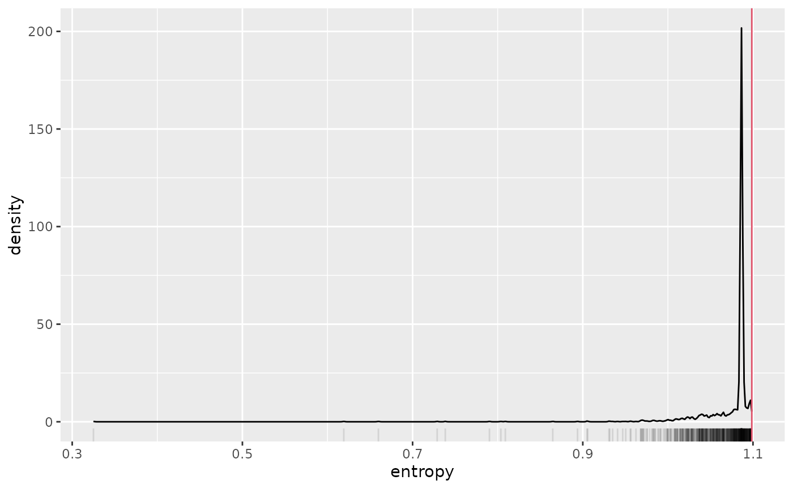
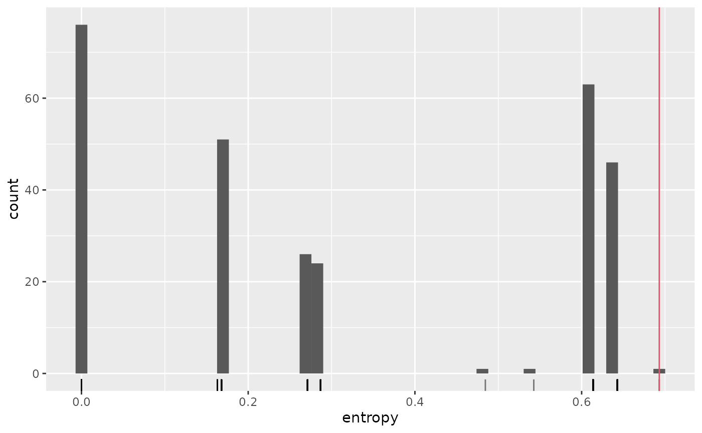
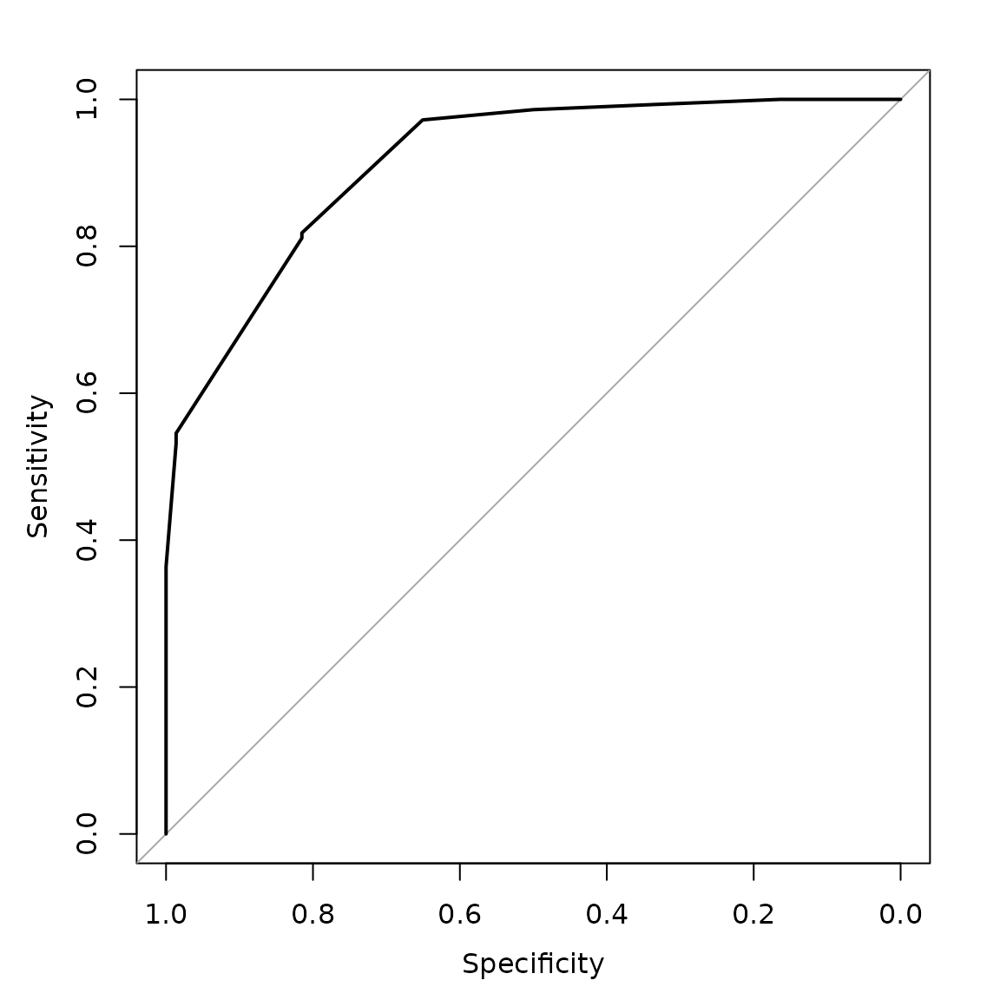

Introduction
Once a (CO)VLMC has been estimated from a sequence, it can used to make one step or multiple steps ahead prediction on sequences using the same state space. The predictions can be expressed as probabilities on the state space for the future value of the time series or directly as the most likely value considering the past of the time series.
VLMC case
Mixvlmc implements one-step-ahead prediction. This is done in a straightforward way, apart for the initial values. Indeed, given a time series \((x_i)_{1\leq i\leq n}\) and a VLMC of order \(d\), the context of \(x_j\) for \(j>d\) can be determined from the \(d\) past values \[ x_{j-d}, x_{j-d+1}, \ldots, x_{j-1}. \] In the VLMC case, this context is associated to a conditional probability distribution for \(X_j\). This distribution can be reported directly as the “prediction” for \(x_j\), or a direct prediction can be made using \[ \arg\max_{x\in S}\mathbb{P}(X_j=x|X_{j-1}=x_{j-1},\ldots,X_{j-d}=x_{j-d}), \] where \(S\) is the state space of the VLMC. Notice than this can be used to predict \(x_{n+1}\) which is unknown, making actual predictions.
COVLMC case
The case of COVLMC is almost identical. The only difference comes from the covariate influence. One-step-ahead predictions can be made only if the time series of covariates is provided.
Once the context of \(x_j\) has been computed as in the case of a VLMC, we obtain from the COVLMC the conditional distribution \[ \mathbb{P}(X_j|X_{j-1}=x_{j-1},\ldots,X_{j-d}=x_{j-d}, Y_{j-1}=y_{j-1}, \ldots, Y_{j-h}=y_{j-h}), \] where \(h\) is the order of covariate dependency for this context.
The distribution can be reported or a prediction can be made using the mode of the distribution, exactly as in the VLMC case.
Initial values
The only difficulty comes in both cases from the initial values \(x_1\) to \(x_d\) for which no proper context can be
determined. This issue appears in numerous situations when using
(CO)VLMC models, in particular for likelihood calculation (see
vignette("likelihood")) and for sampling (see
vignette("sampling")).
We use the notion of extended context described in detail in the likelihood vignette. The key idea is to include in the (CO)VLMC additional contexts (and thus conditional distributions) to model the first few observations.
In practice
VLMC
Let us consider for example the sun spot time series,
sunspot.year, seen as a binary time series, with high
activity associated to a number of sun spots larger than the median
number.
We adjust automatically an optimal VLMC as follows:
sun_model_tune <- tune_vlmc(sun_activity)
sun_model_tune
#> VLMC context tree on high, low
#> cutoff: 2.306 (quantile: 0.03175)
#> Number of contexts: 9
#> Maximum context length: 5
#> Selected by BIC (236.262) with likelihood function "truncated" (-98.83247)Predictions are obtained as follows:
Notice that contrarily to many implementations of
stats::predict(), we do not support predictions without new
data, but the original time series can of course be used as the “new
data”.
Predictions are relatively correct, as shown by the confusion matrix:
table(sun_model_predictions[-length(sun_model_predictions)], sun_activity)
#> sun_activity
#> high low
#> high 119 27
#> low 27 116Notice that we remove the last prediction to be able to perform the
comparison. We could have asked for it to be excluded directly by
passing final_pred=FALSE to the predict.vlmc()
function.
The BIC used by default in tune_vlmc may be too
conservative for prediction or sampling oriented use of the final model.
With the AIC, we obtain a more complex model as follows:
sun_model_tune_aic <- tune_vlmc(sun_activity, criterion = "AIC")
sun_model_tune_aic
#> VLMC context tree on high, low
#> cutoff: 2.306 (quantile: 0.03175)
#> Number of contexts: 9
#> Maximum context length: 5
#> Selected by AIC (203.711) with likelihood function "truncated" (-98.83247)As expected it has a slightly better confusion matrix on its estimation data set:
table(
predict(as_vlmc(sun_model_tune_aic), sun_activity, final_pred = FALSE),
sun_activity
)
#> sun_activity
#> high low
#> high 119 27
#> low 27 116Despite the use of penalized likelihood, we may experiment some form of overfitting and a split sample approach could be used to study it. For instance, one can use AIC to build a VLMC on the first half of the sun spots time series and evaluate the quality of the predictions on the second half, as follows:
first_half <- 1:(length(sun_activity) %/% 2)
sun_model_tune_aic_half <- tune_vlmc(sun_activity[first_half], criterion = "AIC")
sun_model <- as_vlmc(sun_model_tune_aic_half)
table(
predict(sun_model, sun_activity[-first_half], final_pred = FALSE),
sun_activity[-first_half]
)
#>
#> high low
#> high 67 13
#> low 14 51The predictions remain of a rather good quality.
COVLMC
To illustrate COVLMC predictions, we use the French CAC index
provided in EuStockMarkets:
CAC_raw <- as.data.frame(EuStockMarkets)$CACWe turn it into a discrete time series with three values:
- Stay if the value of the index on day t+1 is between 99.5% and 100.5% of the value on day t
- Up if the value increased by at least 0.5%
- Down if the value decreased by at least 0.5%
CAC_rel_evol <- diff(CAC_raw) / CAC_raw[-length(CAC_raw)]
CAC_dts <- factor(
ifelse(CAC_rel_evol >= 0.005, "Up",
ifelse(CAC_rel_evol <= -0.005, "Down", "Stay")
),
levels = c("Down", "Stay", "Up")
)We use the other indexes of EuStockMarkets as
covariates. As previously, we select a model with the AIC criterion:
CAC_covariates <- as.data.frame(EuStockMarkets)[c("DAX", "SMI", "FTSE")][-1, ]
CAC_covlmc <- tune_covlmc(CAC_dts, CAC_covariates, criterion = "AIC")
CAC_comodel <- as_covlmc(CAC_covlmc)Finally, we obtain predictions using
predict.covlmc():
CAC_pred <- predict(CAC_comodel, CAC_dts, CAC_covariates, final_pred = FALSE)In this case, the predictions are of rather poor quality:
table(CAC_pred, CAC_dts)
#> CAC_dts
#> CAC_pred Down Stay Up
#> Down 40 46 36
#> Stay 453 625 467
#> Up 36 65 91This can be easily explained by the large ambiguity of the conditional distributions as can be observed by focusing on them rather than on predictions:
CAC_probs <- predict(CAC_comodel, CAC_dts, CAC_covariates, final_pred = FALSE, type = "probs")
CAC_probs[1:10, ]
#> Down Stay Up
#> [1,] 0.2841765 0.3961249 0.3196986
#> [2,] 0.2878788 0.4073084 0.3048128
#> [3,] 0.2878788 0.4073084 0.3048128
#> [4,] 0.2878788 0.4073084 0.3048128
#> [5,] 0.2878788 0.4073084 0.3048128
#> [6,] 0.2878788 0.4073084 0.3048128
#> [7,] 0.2878788 0.4073084 0.3048128
#> [8,] 0.2878788 0.4073084 0.3048128
#> [9,] 0.4248040 0.3124036 0.2627924
#> [10,] 0.3747649 0.4891093 0.1361259The Shannon entropies of those conditional distributions are generally relatively close to the maximum in this setting, i.e. 1.09861, as shown on this graphical illustration
entropies <- data.frame(entropy = apply(CAC_probs, 1, \(x) -sum(x * log(x))))
ggplot(entropies, aes(x = entropy)) +
geom_density() +
geom_rug(alpha = 0.1) +
geom_vline(xintercept = -log(1 / 3), col = 2) This illustrate the fact that (CO)VLMC models are not predictive models but rather generative models. They may perform well on predictive tasks if the conditional distributions are peaked enough, which corresponds in a way to simple predictive cases.
For example, the case of the sun spots studied above for the VLMC has better predictive performances because of the presence of strongly peaked distributions (some of them are even deterministic), as shown below:
sun_probs <- predict(as_vlmc(sun_model_tune_aic), sun_activity,
final_pred = FALSE,
type = "probs"
)
sun_entropies <- data.frame(entropy = apply(
sun_probs, 1,
\(x) -sum(x * log(x), na.rm = TRUE)
))
ggplot(sun_entropies, aes(x = entropy)) +
geom_histogram(bins = 50) +
geom_rug(alpha = 0.5) +
geom_vline(xintercept = -log(1 / 2), col = 2)
This while (CO)VLMC based predictions can be interesting, one will
generaly obtained more insights about the original time series using
simulations, as detailed in vignette("sampling").
Metrics
In addition to predict.vlmc() and
predict.covlmc(), mixvlmc provides a metrics()
function which computes and reports a collection of classification
oriented quality metrics computed on the time series (and covariates)
used to estimate the (CO)VLMC model. Those metrics could be computed
easily using the predict() functions, but
metrics() is faster and does not need the original
data.
VLMC
For instance for the sun spots complex AIC model, we obtain
sun_metrics <- metrics(as_vlmc(sun_model_tune_aic))
sun_metrics
#> VLMC context tree on high, low
#> cutoff: 2.306 (quantile: 0.03175)
#> Number of contexts: 9
#> Maximum context length: 5
#> Confusion matrix:
#> high low
#> high 119 27
#> low 27 116
#> Accuracy: 0.8131
#> AUC: 0.9146The ROC curve is computed by metrics() (for state space
of size 2) and can be plotted simply using:
plot(sun_metrics$roc)
COVLMC
Similarly, the CAC model gives:
CAC_metrics <- metrics(CAC_comodel)
CAC_metrics
#> VLMC with covariate context tree on Down, Stay, Up
#> cutoff in quantile scale: 0.01046
#> Number of contexts: 5
#> Maximum context length: 2
#> Confusion matrix:
#> Down Stay Up
#> Down 40 46 36
#> Stay 453 625 467
#> Up 36 65 91
#> Accuracy: 0.4067
#> AUC: 0.5507When the state space contains three or more states, we report the generalized AUC proposed by Hand and Till in A Simple Generalisation of the Area Under the ROC Curve for Multiple Class Classification Problems.